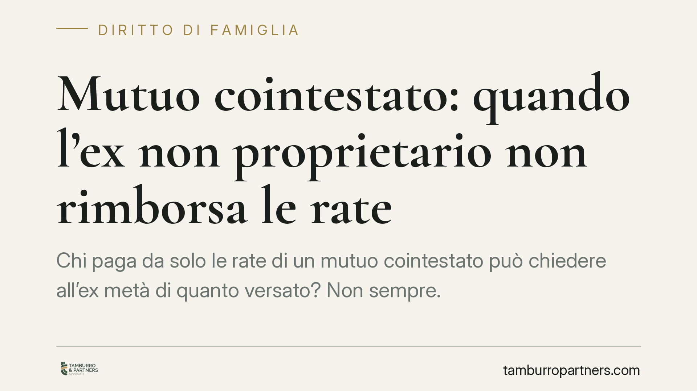

Mutuo cointestato: quando l'ex non proprietario non rimborsa le rate
Chi paga da solo le rate di un mutuo cointestato può chiedere all'ex metà di quanto versato? Non sempre. Una recente pronuncia del Tribunale di Palermo ha escluso il diritto di regresso quando l'ex aveva firmato solo per garantire il reddito, senza essere proprietario né trarre vantaggio dall'immobile. Una distinzione che incide su molte separazioni.

Il caso
Due ex coniugi avevano acceso un mutuo cointestato. L'immobile acquistato, però, era di proprietà esclusiva di uno solo dei due. Dopo la rottura, il proprietario ha continuato a pagare tutte le rate e ha chiesto all'ex la restituzione della metà.
Il Tribunale di Palermo ha respinto la domanda. La firma dell'ex sul contratto non rifletteva una reale contitolarità del debito nei rapporti interni: serviva soltanto a rafforzare il profilo reddituale richiesto dalla banca per concedere il finanziamento. L'ex non era proprietario dell'immobile e non ne aveva ricavato alcuna utilità economica.
Inquadramento normativo
Il punto di partenza sono gli artt. 1298 e 1299 del Codice civile, che disciplinano le obbligazioni solidali, cioè quelle in cui più soggetti rispondono dello stesso debito.
L'art. 1298 c.c. stabilisce che, nei rapporti interni tra i condebitori, l'obbligazione si divide in parti che si presumono uguali, salvo che risulti diversamente dal titolo o dalle circostanze. È una presunzione relativa: può essere superata dalla prova contraria.
L'art. 1299 c.c. riconosce al condebitore che ha pagato l'intero il diritto di regresso, cioè la facoltà di farsi rimborsare dagli altri la loro quota. Ma quella quota va determinata guardando all'effettiva ripartizione interna del debito, non alla mera presenza della firma sul contratto.
Qui sta il nodo. Una cosa è la responsabilità esterna verso la banca: davanti all'istituto di credito entrambi i cointestatari rispondono dell'intero, in solido. Altra cosa è la ripartizione interna tra gli ex: chi deve davvero sopportare il peso del debito, e in quale misura.
Implicazioni pratiche
Il Tribunale ha valorizzato la funzione concreta della firma. Se l'ex ha sottoscritto il mutuo solo per consentire l'erogazione — fungendo di fatto da garante del reddito — e non ha acquisito la proprietà né goduto del bene, la presunzione di pari ripartizione risulta superata. In questo quadro, il regresso non spetta: il proprietario che ha pagato ha semplicemente onorato un debito che, internamente, gravava su di lui.
La conclusione cambia radicalmente al mutare dei fatti. Se l'immobile è in comproprietà, se entrambi vi hanno abitato, se l'ex ha tratto un vantaggio economico, o se esistono accordi diversi, la valutazione può ribaltarsi e il diritto di regresso riaffiorare.
Per chi si separa, questo significa che la sola cointestazione del mutuo non determina automaticamente l'obbligo di dividere le rate a metà. Conta la sostanza dell'operazione: chi è proprietario, chi usa il bene, perché quella firma è stata apposta.
La prova è decisiva
Trattandosi di superare una presunzione, tutto si gioca sulla prova. Chi sostiene che la ripartizione interna è diversa da quella paritaria deve dimostrarlo: con il titolo di acquisto, con la corrispondenza bancaria, con gli accordi intercorsi, con la condotta tenuta dalle parti nel tempo.
È un terreno in cui ogni vicenda va letta sui fatti specifici. La stessa clausola contrattuale può produrre esiti opposti a seconda del contesto in cui si colloca.
Cosa fare in concreto
- Ricostruisci la funzione della firma: verifica se la cointestazione del mutuo rifletteva una reale contitolarità o serviva solo a soddisfare i requisiti reddituali della banca.
- Controlla la proprietà dell'immobile: accerta chi risulti intestatario dal rogito e se vi sia comproprietà, perché incide direttamente sulla ripartizione interna.
- Conserva la documentazione: estratti conto, ricevute dei pagamenti, atto di acquisto e ogni accordo scritto tra gli ex sono elementi chiave per provare la ripartizione effettiva.
- Regola il mutuo negli accordi di separazione o divorzio: una clausola chiara su chi paga e con quali effetti interni previene contenziosi successivi.
- Verifica i presupposti prima di agire: prima di chiedere il rimborso delle rate, è opportuno accertare se nel caso concreto sussistano le condizioni del diritto di regresso.
---
*Contributo informativo a cura di Tamburro & Partners Avvocati – Avv. Giuseppe Tamburro. Non costituisce parere legale.*
Ogni famiglia ha il suo equilibrio.
Separazione, divorzio, affidamento, assegno: se vuoi un confronto riservato su una specifica situazione, scrivi allo studio. Ti rispondiamo entro un giorno lavorativo.